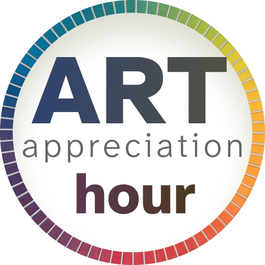
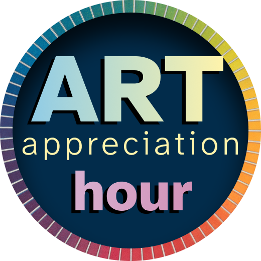

One artwork, one hour, shared with fellow art lovers.
Welcome
We look closely at a single artwork, spend time in quiet contemplation, and share what we observe and feel. Same artwork, different perspectives, over Zoom.
About
Art Appreciation Hour is inspired by the global event Slow Art Day , by long-form writing focused on a single artwork, like the New York Times series Close Read and a Financial Times column by Enuma Okoro , and by Matthew Wilson’s Art Unpacked .
Inaugural event
The invitation and Zoom link are shared through School of the Possible
- When (in your time zone):
- Monday, November 9, 2026, 8–9 AM PT
Let’s chat about Remedios Varo’s 1956 painting Armonía (Harmony), shown on these pages:
- Harmony (1956) on WikiArt
- The Dueling Dualities of Remedios Varo, Art Institute of Chicago
- Remedios Varo: Science Fictions (Harmony is the fourth image down)
Agenda
- 5 minutes: Hellos and introductions
- 5 minutes: Introduction to the artwork
- 10 minutes: Silent looking
- 35 minutes: Conversation
- 5 minutes: Goodbyes